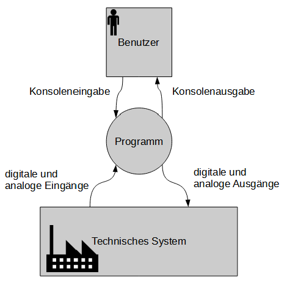
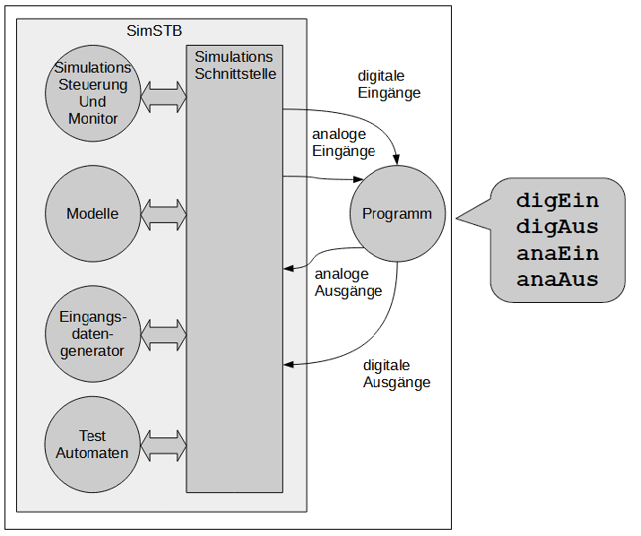
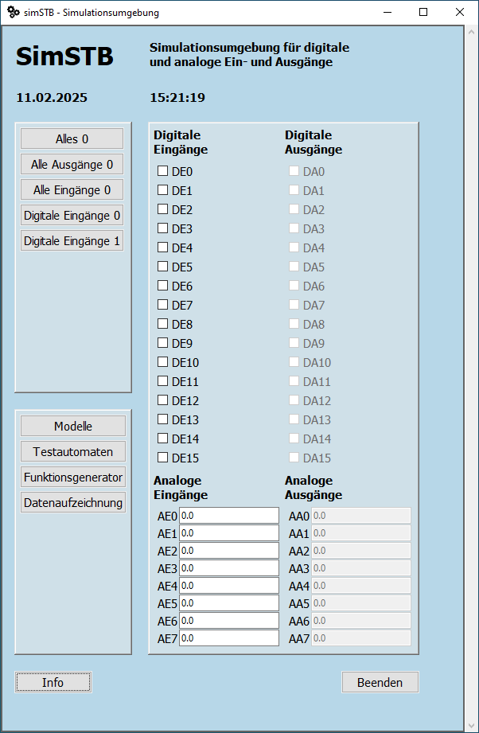
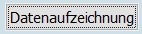
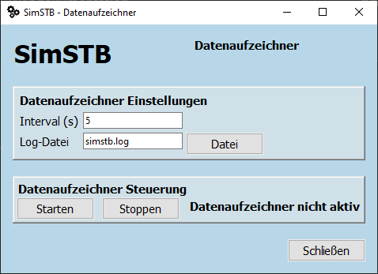
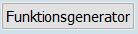
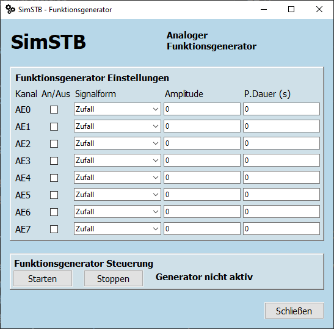
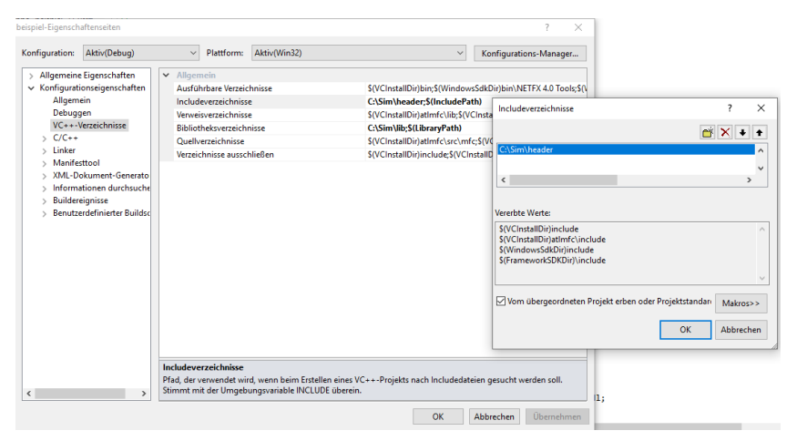
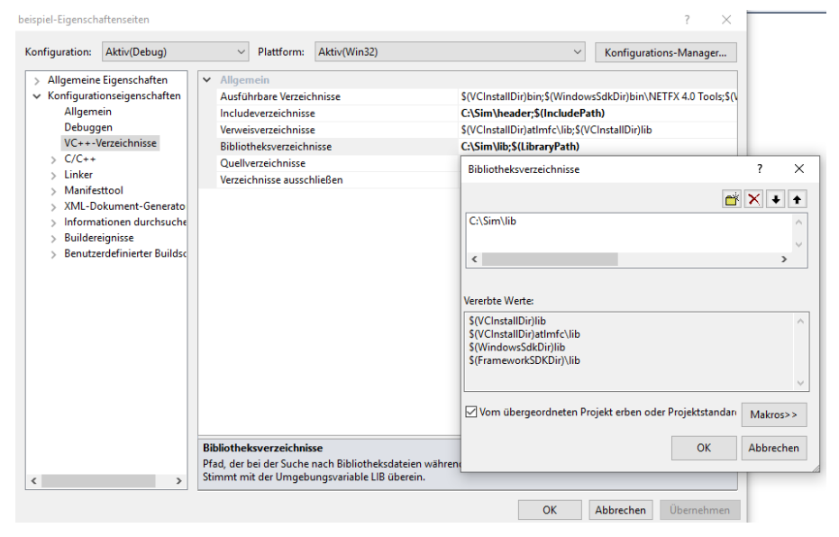
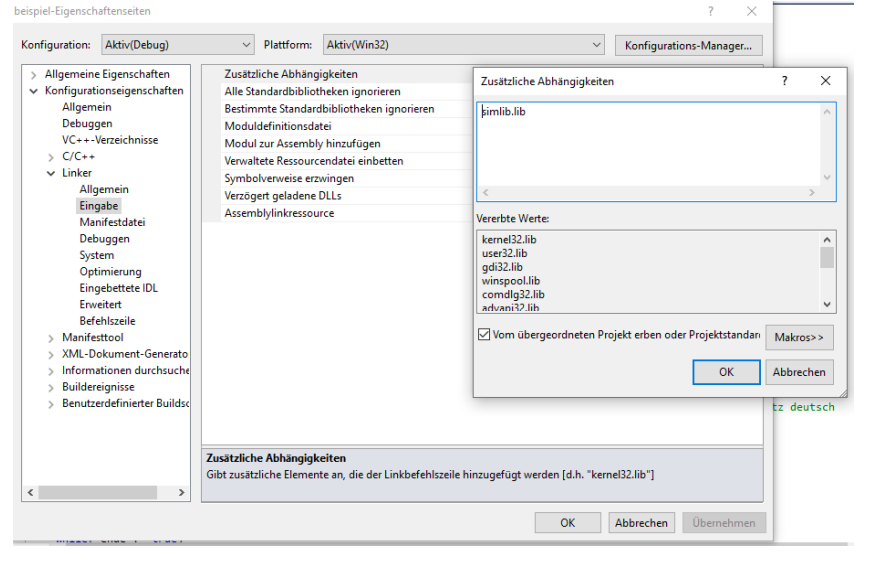

Oft muss ein Programm nicht nur über die Konsole oder eine graphische Benutzeroberfläche mit dem Benutzer kommunizieren, sondern auch über analoge und digitale Schnittstellen mit einem technischen System.

Die Simulationsumgebung SimSTB erlaubt es, dies für Schulungszwecke auch ohne zusätzliche Hardware mittels Simulation durchzuführen.

SimSTB besteht aus zwei Teilen:
C:\. Solange Sie
nur die
Simulationsumgebung nutzen wollen, und keine Modifikationen an deren Quellcode
vornehmen wollen brauchen Sie keine weiteren Dateien.
C:\SIM
│ anaaus.txt
│ anaein.txt
│ digaus.txt
│ digein.txt
│ LICENSE.txt
│ README.md
│ simstb.log
│
├───beispiele
│ beispiel.cpp
│ beispiel.py
│
├───bin
│ band_links.gif
│ band_rechts.gif
│ band_stopp.gif
│ led_blau.png
│ led_grau.png
│ led_gruen.png
│ modelle.json
│ simstb.ico
│ simstb_gui.exe
│ simstb_modell_1.exe
│ simstb_modell_2.exe
│
├───dokumentation
│ SimSTB-Benutzerdokumentation.pdf
│
├───header
│ simulation.h
│
├───lib
│ simlib.lib
│
└───python
simstb_dateizugriff.py
simstb_konfig.py
simstb_logger.py
simulator.py
Bei der Simulationsumgebung SimSTB handelt es sich um Open Source Software. Diese steht über GitHub zur Verfügung.
Im Unterverzeichnis bin finden Sie Programme zur Bedienung der
Simulationsumgebung:
Mit Hilfe des Programms simstb_gui.exe können Sie digitalen und analogen
Ein- und
Ausgänge überwachen und die Eingänge setzen. Die Werte werden im Sekundentakt
aktualisiert. Starten können Sie das Programm über einen einfachen Doppelklick auf die
Exe-Datei.


können Sie eine Datenaufzeichnung starten.

können Sie einen analogen Funktionsgenerator starten.
simstb.log
befinden, welche Hinweise über aufgetretene Fehlsituationen gibt.Um die Simulationsumgebung SimSTB nutzen zu können, müssen 4 Einstellungen vorgenommen werden:
Pfad C:\
Sim\header ergänzt werden. Vorgenommen werden die Einstellungen unter
Projekt → Eigenschaften → VC++Verzeichnisse →
Includeverzeichnisse → Bearbeiten.

simulation.h muss in der eigenen CPP-Datei
inkludiert
werden. Dabei sind Anführungszeichen und keine spitzen Klammern zu verwenden. Im
Beispiel-Code unten sieht man ein Beispiel hierfür.Pfad C:\
Sim\lib ergänzt werden. Vorgenommen werden die Einstellungen unter Projekt →
Eigenschaften → VC++Verzeichnisse → Includeverzeichnisse →
Bearbeiten.
simlib.lib muss ergänzt werden.
Vorgenommen
werden die
Einstellungen unter Projekt → Eigenschaften → Linker → Eingabe →
Zusätzliche Abhängigkeiten → Bearbeiten.

Danach kann normal weiter programmiert werden, wobei man die vier Funktionen zur Nutzung der Simulationsumgebung benutzen darf.
Bei der Bibliothek simlib.lib handelt es sich um eine 32-bit
Bibliothek.
Diese wurde
der Compileroption /MDd (Multithreaded-Debug-DLL) erstellt. Falls
eine
andere Version
benötigt wird, kann diese mit Hilfe der Open Source Dateien (siehe Abschnitt 2.3
Quelldateien) selber erstellt werden.
const int DIGMAXLAENGE = 16;
const int ANAMAXLAENGE = 8;
bool digEin( int id);
void digAus( int id, bool wert);
double anaEin( int id);
void anaAus( int id, double wert);
...
#include "simulation.h"
...
int main()
{
bool ende = false;
double wert;
...
while( ende != true)
{
wert = anaEin( 0);
cout << wert << endl;
Sleep( 1000);
ende = digEin( 0);
}
digAus( 15, 1);
anaAus( 7, -123.456);
...
}
Damit die Python-Schnittstelle genutzt werden kann, muss das Paket filelock installiert sein.
pip install filelock
Damit das eigene Programm die Schnittstellenfunktionen nutzen kann muss man die Datei simulator.py importieren.
Hierzu dient die folgende Anweisung:
import simulator as sim
Damit das Modul simulator.py gefunden wird, muss der Python-Modul-Pfad
ergänzt werden.
Dies geschieht durch Anlegen bzw. Erweitern der Umgebungsvariablen PYTHONPATH.
Die Umgebungsvariable muss das Verzeichnis C:\Sim\python enthalten.
DIGMAXLAENGE = 16
ANAMAXLAENGE = 8
def dig_ein( id)
def dig_aus( id, wert)
def ana_ein( id)
def ana_aus( id, wert)
id ist vom Datentyp int.id ist zwischen 0 und 15 bei den beiden Funktionen für die
digititale Ein- und Ausgabe.id ist zwischen 0 und 7 bei den beiden Funktionen für die analoge
Ein- und Ausgabe.wert ist vom Datentyp bool bei der digitalen Ausgabe, vom Datentyp float bei der
analogen Ausgabe.dig_ein gibt einen Wert vom Datentyp bool zurück. Die Funktion ana_ein
gibt einen Wert
vom Datentyp float zurück.dig_ein und ana_ein None zurück.dig_aus und ana_aus nichts ab.simstb.log
befinden, welche Hinweise über aufgetretene Fehlsituationen gibt.
...
import simulator as sim
...
def test():
""" Testfunktion """
ende = False
...
while ende != True:
wert = sim.ana_ein( 0)
print(wert)
time.sleep( 1)
ende = sim.dig_ein( 0)
sim.dig_aus( 15, 1)
sim.ana_aus( 7, -123.456)
...
test()
Powered by w3.css